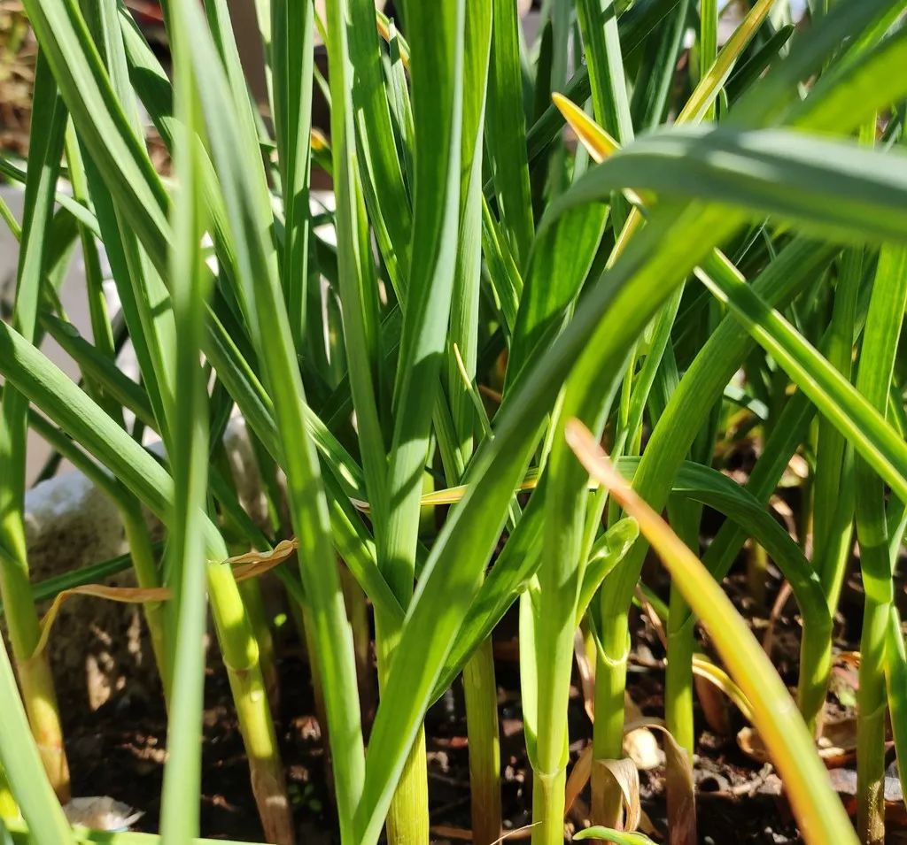
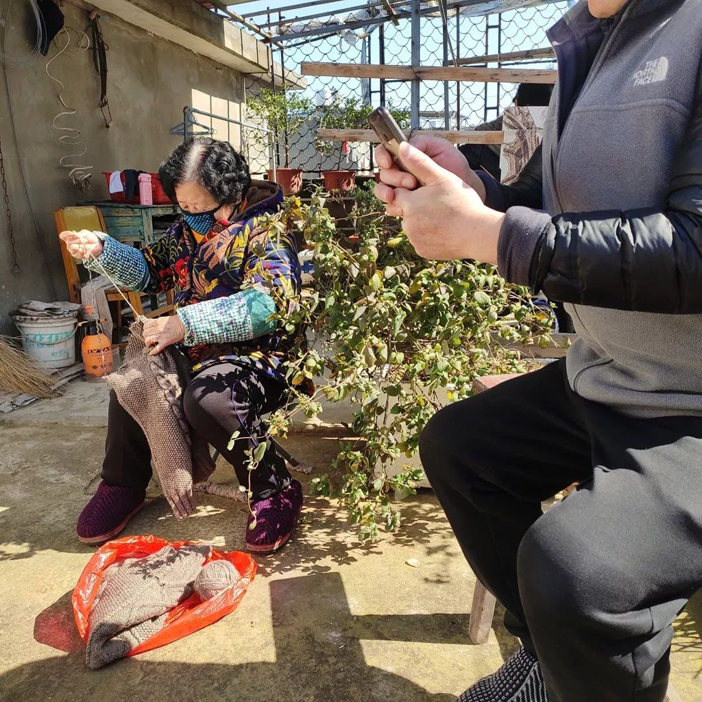
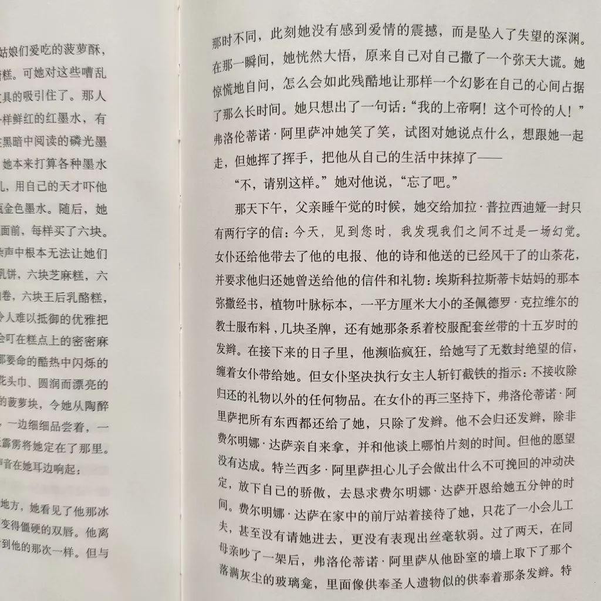

时刻准备着
原文链接 备份链接 2020年2月13日。 农历正月二十。 武汉封城第廿二天。 天门封城第廿一天。 噩梦中醒来，天还没亮。想爬起来写点什么，环顾四周，却一阵哆嗦。有一种很空茫、无助、虚弱、恐惧混合的感觉。除了小时候经常会有，青春期后就只 …

2020年2月16日。
农历正月廿三。
武汉封城第廿五天。
天门封城第廿四天。
今天阳光好到足以让人忘记昨天的雪。一旦化成水，被阳光蒸发，曾经“为雪白头”的世界又恢复了它寻常的模样。受制感观，人真的很难在叵测变化的世界里找寻坚固的记忆。健忘是人的本性，但并非是全人类的。“天不生仲尼，万古如长夜”。我们之所以有今时今日之发展，倚赖人类精英智慧的传承。要知道我们今天诞生的baby，与秦朝诞生的小孩，并无本质区别。关键是，我们作为传承者，应该教给他们什么。秦人并非“不暇自哀”，而是焚书坑儒导致九州沆瀣万马齐喑。后人也并非没有“哀之鉴之”，杜牧的《阿房宫赋》本身就是在“哀之鉴之”。当代每一个发出自己声音的记录者都是在“哀之鉴之”，只不过这当代的哀，只能由后代来鉴。我们之所以与杜牧同叹，皆因自秦以降，高墙犹在。
我很努力的想抓住一把阳光。
松开一看，空空如也。
但我清楚，我抓住了它。







水妈
长按二维码向我转账
受苹果公司新规定影响，微信 iOS 版的赞赏功能被关闭，可通过二维码转账支持公众号。
原文链接 备份链接 2020年2月13日。 农历正月二十。 武汉封城第廿二天。 天门封城第廿一天。 噩梦中醒来，天还没亮。想爬起来写点什么，环顾四周，却一阵哆嗦。有一种很空茫、无助、虚弱、恐惧混合的感觉。除了小时候经常会有，青春期后就只 …
原文链接 备份链接 2020年2月12日。 农历正月十九。 武汉封城第廿一天。 天门封城第二十天。 今早没敢发给你看的，就是这个视频。——可别怪我咯，谁让他们这时候放出来。要我说，陈导团队也万万没料到，这年头居然会灾到连一顿像样的火锅都 …
原文链接 备份链接 2020年2月9日。 农历正月十六。 武汉封城第十八天。 天门封城第十七天。 今天居然没有被社区宣传疫情的大喇叭吵醒，一觉安稳睡到了10点半。而我的床丝毫没有想放我走的意思。只好翻身，背对阳光，摸出手机。并不饿，却非常 …
原文链接 备份链接 2020年2月6日。 农历正月十三。 武汉封城第十五天。 天门封城第十四天。 闹哄之后，豆瓣日记今天被暂停使用了。这个消息居然在豆瓣引发了斯德哥尔摩综合症般的辩论。世风日下，文青们都被训练得在大是大非面前排队站位了。豆 …
原文链接 备份链接 （期待你明天的乱炖） 2020年2月5日。 农历正月十二。 武汉封城第十四天。 天门封城第十三天。 按这个新冠病毒14天的潜伏期上限算，今天我们终于可以嘘口气，以示自己解除隐患了。上午还跟伯伯说，我们要不要喝点酒庆祝一 …